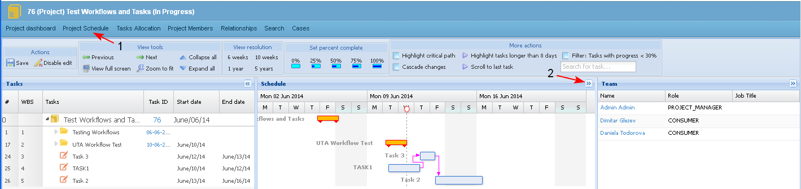
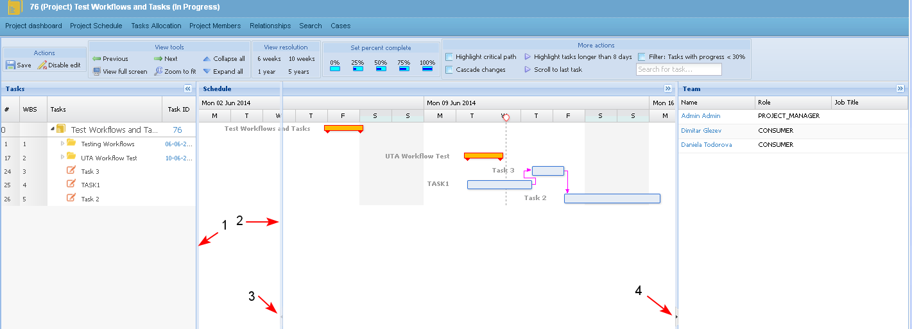

The user may show and hide sections in the project schedule and in the task allocation view.
Hide - Section
- By default the Gantt chart view of a project is visible in the "Project schedule" (1) screen and on the "Resource allocation view" screen. The user hides it by selecting the corresponding ">>" (2) button.

- The system hides the Gantt chart section (see the screen below).
Show Section
- The user could select the corresponding "<<" (2) button of a hidden section to view it again.

Resize Section
- The user may resize a section by drag and drop the border line of the section (1-2) to the needed extent.
- The user may resize a section using its corresponding buttons (3 or 4).
